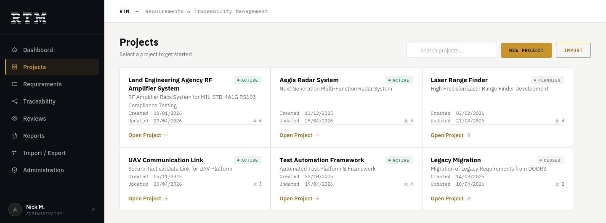
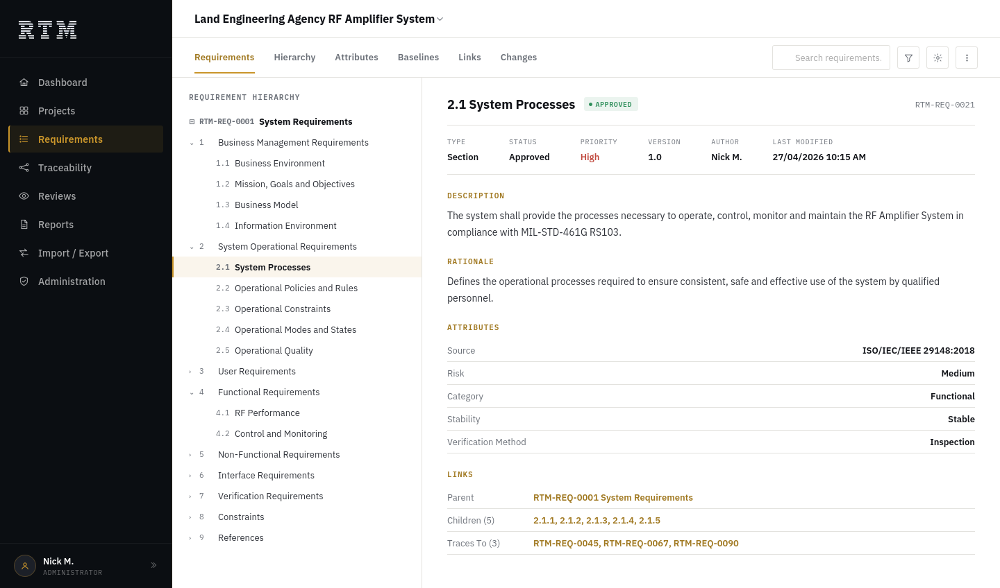
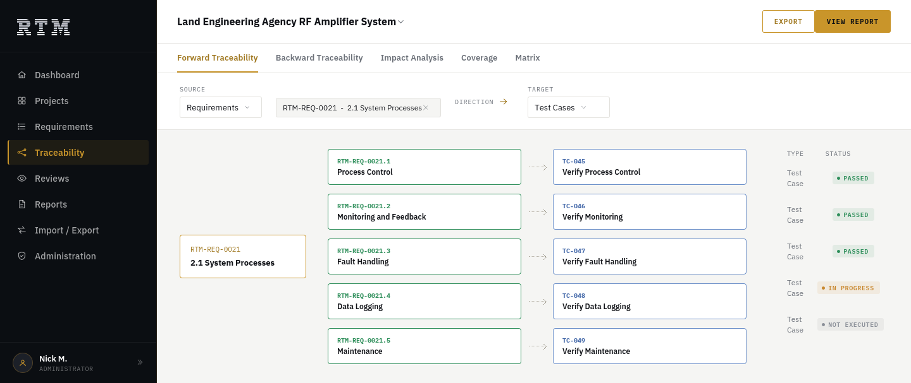
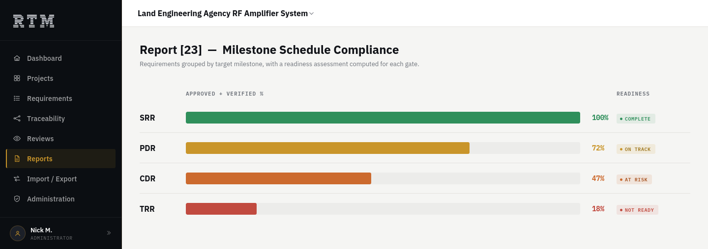
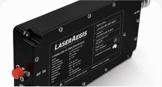

Every requirement traceable, from tender to verification
RTM is requirements management and traceability software for Defence, Aerospace and systems engineering teams. Connect every requirement from ITT and tender through implementation, verification and validation — with controlled changes, audit-ready traceability and CDR/TRR readiness. Built for secure and offline environments.

RTM was developed inside real systems engineering work, where requirements had to be decomposed, controlled, verified and supported with objective evidence
Requirements scattered across documents and spreadsheets — every gate review means checking each one by hand, and something still slips through.
Every requirement lives in a single system, with live traceability from source to verification.
No visibility into what's changed, what's broken, or what hasn't been tested yet.
Coverage and acceptance views show programme readiness at a glance, with CR-enforced governance controlling every change.
Deploying a new tool eats weeks — complex setup, a steep learning curve, and lost momentum.
No server, no IT project. Runs in your own controlled environment, keeping sensitive data exactly where it belongs.
Engineers edit the same requirement at the same time. The conflict isn't caught until an audit fails or a defect surfaces late.
Every edit is logged automatically, and conflicting changes are caught the moment they happen — not after.
Preparing for a CDR or TRR means manually assembling evidence and reports — time-consuming, and easy to miss something a reviewer will ask about.
Purpose-built for Defence gate reviews. Generate your programme pack in one click, ready for CASG.
Import ITT clauses or your existing spreadsheet. RTM builds the requirement structure and compliance matrix automatically.
See what's approved, implemented, and tested — on one screen, always current, for everyone on the programme.
Generate your CDR or TRR evidence pack in one click. Track coverage, identify gaps and generate review-ready reports.
Hierarchy, attributes, links and change history sit together on one screen — parent, children, and every test case a requirement traces to.


Trace forward from a requirement to the test cases that verify it, or backward from a test case to the clause that created it — with pass/fail status at a glance.
One keystroke groups every requirement by milestone and computes a readiness assessment — COMPLETE, ON TRACK, AT RISK, or NOT READY.

Built for small and medium-sized engineering teams managing real requirements, verification evidence, and compliance obligations — without the cost or overhead of enterprise tooling and IT support
A hardware-led Defence or Aerospace systems engineering team working under ASDEFCON, AS9100, or a similar framework
A medical device engineering team maintaining requirements traceability and verification evidence through design and development
An automotive or rail engineering team managing requirements and change control across hardware systems and parts

An RF or laser systems team tracking component-level requirements and test evidence across complex integration builds
No plugins, no add-on licences, no separate configuration step.
Draft through verified — every requirement's status, always current.
Approved requirements are locked. Edits need a Change Request number, logged automatically.
Trace any requirement to its tests, or any test back to the clause that created it.
Pass/fail status on every test case, visible from the requirement itself.
Dashboards, milestone compliance, HTML reports — no manual assembly.
One shared database. Auto-refresh. Conflicting edits caught, not lost.
Bring in ITT clauses by CSV. RTM flags coverage gaps automatically.
COMPLETE, ON TRACK, AT RISK, or NOT READY — for every gate, at a glance.
One search box across requirements, tests, changes, and more.
Role-based access, password hashing, and a full audit trail from day one.
DOORS-compatible CSV export. Hand it to any customer or auditor.
Single executable. No licence server. Built for air-gapped networks.
| ASDEFCON (Systems) | ITT clause import, compliance matrix, SOW traceability. |
| ISO/IEC/IEEE 15288:2023 | Requirement verification (Clause 6.4.8), baseline management. |
| AS9100 Rev D | Change control (Clause 8.3.6) — lock, CR number, and audit trail. |
| MIL-STD-498 | Verification matrix, trace links, SRS structure export. |
| ECSS-E-ST-10-06C | Requirement quality attributes: unique, verifiable, traceable. |
RTM supports requirements management and traceability workflows aligned with these frameworks. It does not replace the applicable contract, standard or customer-specific requirements.
RTM is engineered and sold directly by LaserAegis — the same team, no reseller handoffs.
| Feature / Criterion | RTM v1.8.0T | IBM DOORS Classic |
|---|---|---|
| One-off cost | AU$5,000 | AU$30,000–100,000+ |
| Annual maintenance | None | AU$8,000–25,000/yr |
| Controlled Environment | On-premise & offline | Requires licence server |
| Lock after approval (CR) | Enforced + audit trail | Optional — discipline-dependent |
| Learning curve | Minutes (menu-driven) | Days (DXL training) |
Bring a representative subsystem or requirements set and see how RTM handles traceability, verification and reporting.